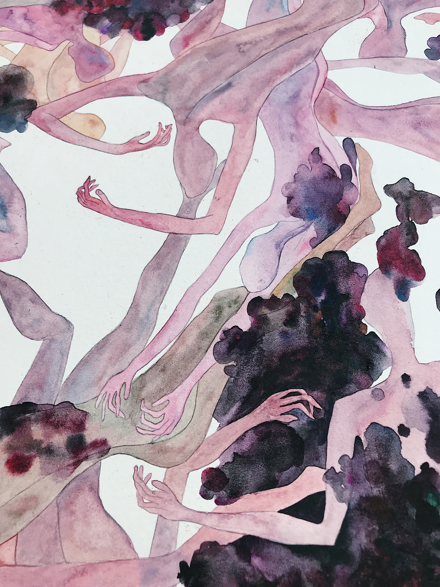
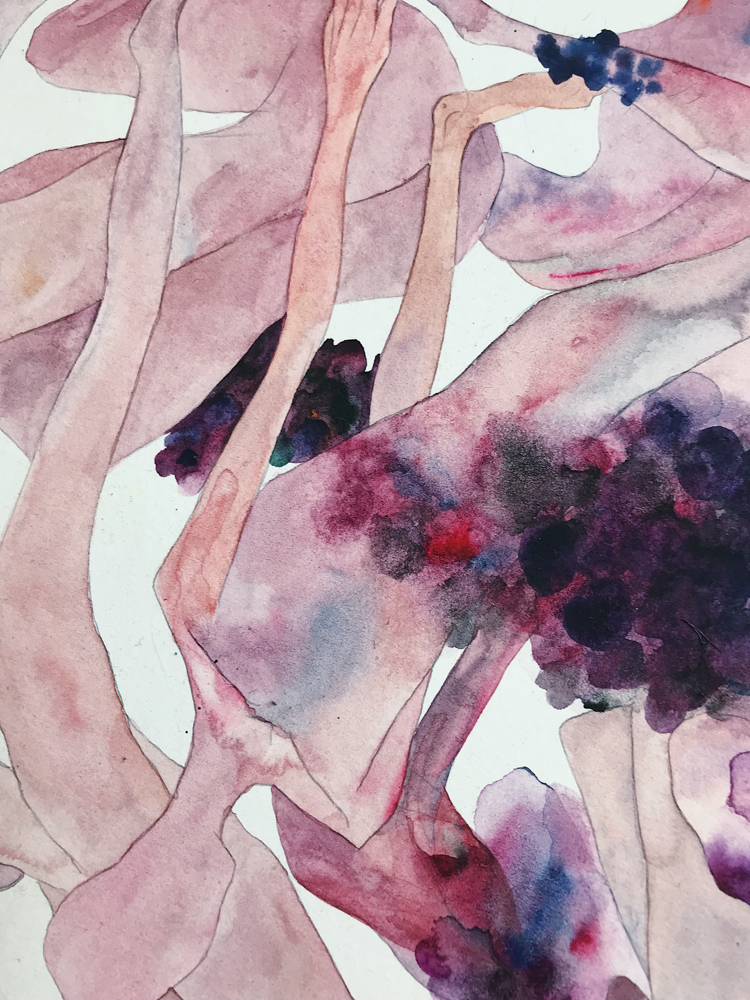

《葡萄成熟时（局部1））》
details of ‘The moment of grape ripening’ | 80_110cm | watercolor on paper | 2018
-
《葡萄成熟时（局部1））》
details of ‘The moment of grape ripening’ | 80_110cm | watercolor on paper | 2018
-

《阿辽莎 Alyosha》
35_44cm｜watercolor on paper｜2015 -

《草地上的人 the flesh on the grass》
35_44cm｜watercolor on paper｜2018 -

《林间 woodland》
35_44cm｜watercolor on paper｜2018
green flesh _stop-motion animation_27'35′′ _HD digital video 1920_1080_2017 _5+1AP.

⻬ 乐 ｜ QILE
1991年出⽣于⽢肃，籍贯河北
2015年本科毕业于中国传媒⼤学戏剧影视美术设计专业；2018年硕⼠研究⽣毕业于中央美术学院实验艺术研究⽣。现居⼯作、创作于北京
个⼈创作实践从个⼈记忆出发，通过私⼈物品对地缘、亲密关系、宗教等议题进⾏探讨，作品形式涉及⼈偶动画、装置、影像、绘画等
2015年本科毕业于中国传媒⼤学戏剧影视美术设计专业；2018年硕⼠研究⽣毕业于中央美术学院实验艺术研究⽣。现居⼯作、创作于北京
个⼈创作实践从个⼈记忆出发，通过私⼈物品对地缘、亲密关系、宗教等议题进⾏探讨，作品形式涉及⼈偶动画、装置、影像、绘画等
艺术作品参展经历
Exhibition Experience
2017，亿亿⽽三；前波画廊
2018，2018东莞东城雕塑装置艺术节，东莞
2019，“UTOPIA | DYSTOPIA”，dietz，科隆，德国
2019，舍平根艺术基⾦会，德国
2019，好奇柜，朵云轩艺术中⼼，上海
2020，⼀茬果，⿊糖盒⼦艺术中⼼，北京
2020，赏味期限——⻬乐个⼈项⽬，M的房间，北京
2020，⻣⾁⽪，酒⻤养⽼院，北京
2020，纵横四海，⼤丘美术馆，北京
2021，⼤医院项⽬，北京
2021，悄悄话：移动的个⼈史，CAIJIN-SPACE，北京
2021，北京当代，全国农展馆，北京
2018，2018东莞东城雕塑装置艺术节，东莞
2019，“UTOPIA | DYSTOPIA”，dietz，科隆，德国
2019，舍平根艺术基⾦会，德国
2019，好奇柜，朵云轩艺术中⼼，上海
2020，⼀茬果，⿊糖盒⼦艺术中⼼，北京
2020，赏味期限——⻬乐个⼈项⽬，M的房间，北京
2020，⻣⾁⽪，酒⻤养⽼院，北京
2020，纵横四海，⼤丘美术馆，北京
2021，⼤医院项⽬，北京
2021，悄悄话：移动的个⼈史，CAIJIN-SPACE，北京
2021，北京当代，全国农展馆，北京